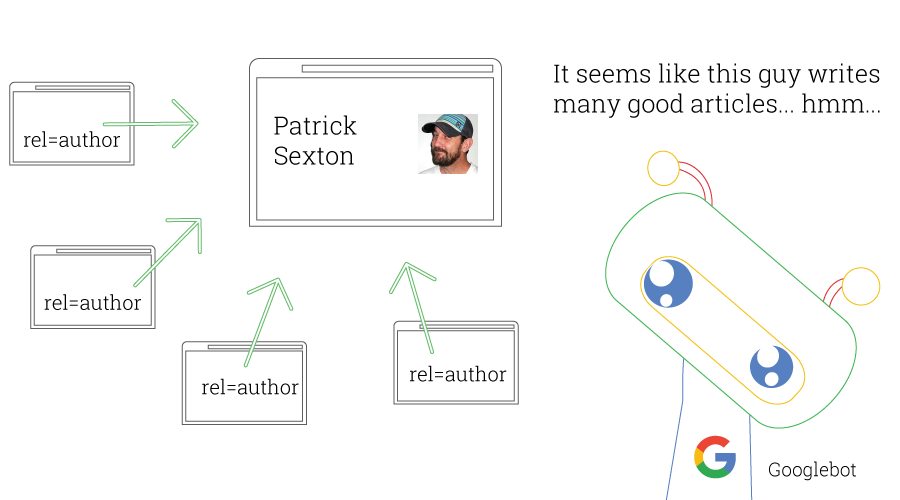

Blog
What is humans.txt and how have you configured it for your site?
Humans.txt is a meta text file that should be placed in the root folder containing information about the creators of the site. Instead of putting that information in a html file, it has it's own txt file containing only that information. On this site there is a link to the file on the index page; also, using<link rel="author" href="humans.txt" /> allows e.g. for search engine indexing as such:

What is Open Graph and how do you make use of it?
Open graph was developed by Facebook and allows for easy integration between a webpage and social media. It decides what part of the website (e.g. an article) should be shared on the social media platform, and links it to user data, so that e.g. facebook can track how many times an article has been shared.To use it on your page, you need to put meta tags for title, type, image, and url in the head element.